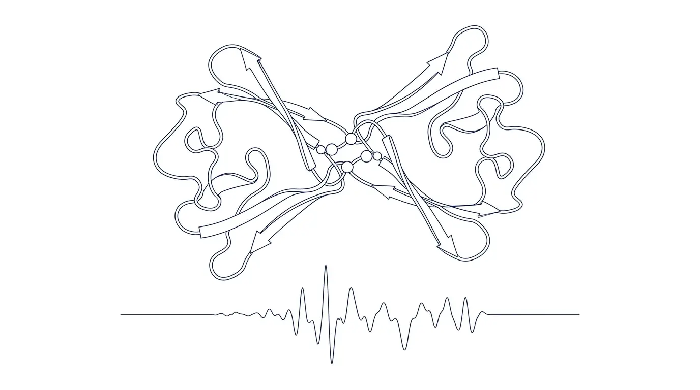

Protein Design
I design and filter protein binders and degradation strategies with structure-based design tools, and support their experimental testing in the wet lab.
University of Washington · Bioengineering & Biochemistry
I build computational and experimental tools for biological systems.
My work spans protein design, neural signal processing, stimulation artifact rejection, and experimental biology. I move between code, wet lab workflows, and hardware-facing systems to turn messy biological questions into testable pipelines.

One set of skills runs through my work: computational modeling, protein design evaluation, signal processing, experimental validation, biological data analysis, and hardware-aware engineering. I use them to design, measure, and interpret biological systems.
I design and filter protein binders and degradation strategies with structure-based design tools, and support their experimental testing in the wet lab.
I design stimulation experiments and build the signal-processing pipelines that recover clean neural responses from noisy µECoG recordings.
I am a University of Washington Bioengineering and Biochemistry Honors student with a Data Science option, graduating in August 2026. My work sits in research environments where experiments, computation, and engineering all have to hold together. I have worked across neural engineering, protein design, electrophysiology, signal processing, computational biology, wet-lab validation, and data analysis. The common thread is not a single biological scale or disease area. It is building careful, usable systems for difficult biological questions.
In the Neural Engineering, Repair & Design Lab, I lead a Washington Research Foundation Fellowship project on stimulation-evoked neural responses, artifact rejection, and near real-time processing for closed-loop neuromodulation research. I designed stimulation protocols, collected and analyzed multi-channel micro-ECoG recordings from rat cortex, and built Python pipelines for trial alignment, filtering, baseline correction, artifact-template reconstruction, subtraction, visualization, response comparison, and electrode-level quality control. That work trained me to deal with messy biological signals, hardware constraints, experimental variability, and analysis decisions where small details can change the interpretation.
At the Institute for Protein Design (Baker Lab), I work on computational and experimental protein design. My projects have included phosphorylation-inducible protein switches, LDL-targeting binder strategies, and BRD4-targeted binder design. I have used RFdiffusion, LigandMPNN, Rosetta/FastRelax, AlphaFold/Chai-1, Python, and Bash to generate, organize, and filter large candidate sets. I have also supported experimental validation through cloning, expression, protein purification, SEC, gel electrophoresis, yeast workflows, flow-cytometry-based binding assays, and assay-data interpretation.
Across these projects, I am strongest when the problem is not already clean. I can write analysis code, interpret biological data, troubleshoot experimental systems, document methods, and communicate results clearly. I am looking for research roles where I can contribute as a hands-on early-career researcher who learns quickly, works carefully, and builds tools that make biological data more reliable and useful.
A focused selection of technical projects, grouped by area.
Built a spike-detection pipeline to compare neural entrainment under different optical stimulation rates.
An adaptive stimulation system that sets its output from live EMG instead of delivering a fixed dose.
Technical review of model-based feedback control for deep brain stimulation.
Merged eight public-health and socioeconomic datasets to analyze chronic-disease trends.
Examined and critiqued models of membrane potential and action-potential propagation.
Control-design workflow around an SBML insulin-signaling model.
Built a document-ranking search engine in Python: TF-IDF scoring over an inverted index, ranked across text and HTML corpora and tested with pytest.
Literature synthesis on IDH1/IDH2 gain-of-function mutations, 2-HG accumulation, and targeted-therapy strategies for glioma and AML.
Review connecting the Warburg effect, glutamine metabolism, and PCK2 activity to tumor growth under glucose deprivation.
Capabilities spanning computational design, experimental biology, and signal and data analysis.
Available for research and research engineering roles involving computational biology, protein design, neural data, biological modeling, or experimental systems. I am interested in teams that value technical range, careful analysis, and the ability to move between computation and experiment. Based in Seattle and open to relocation.